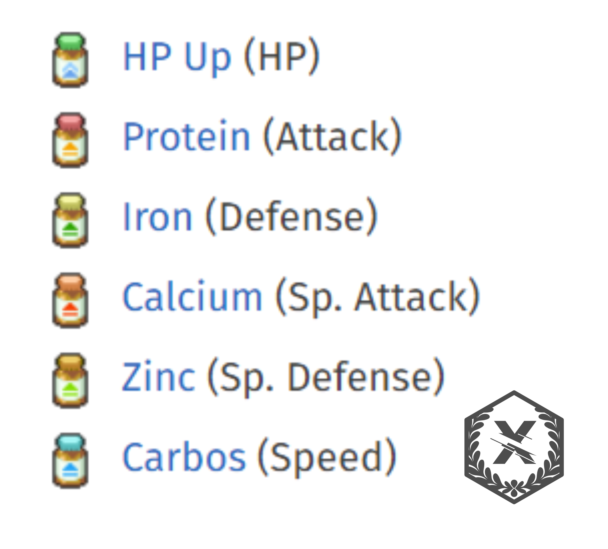
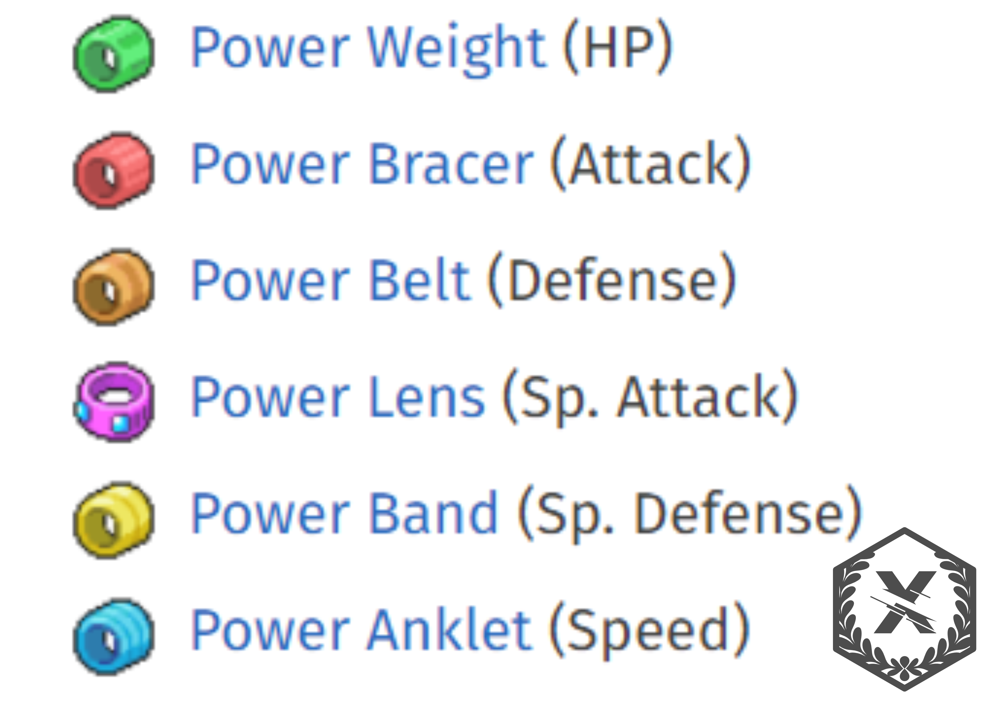
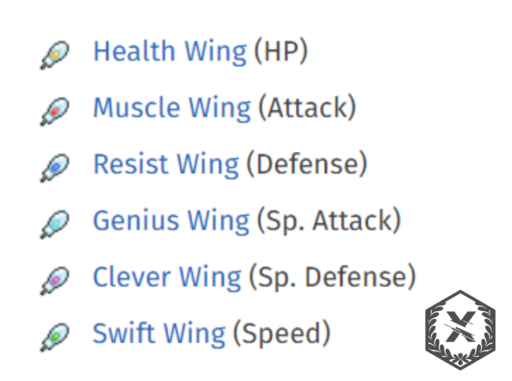
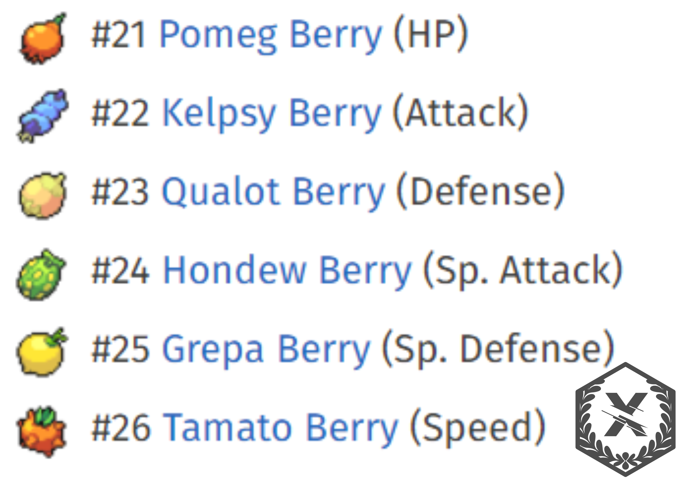
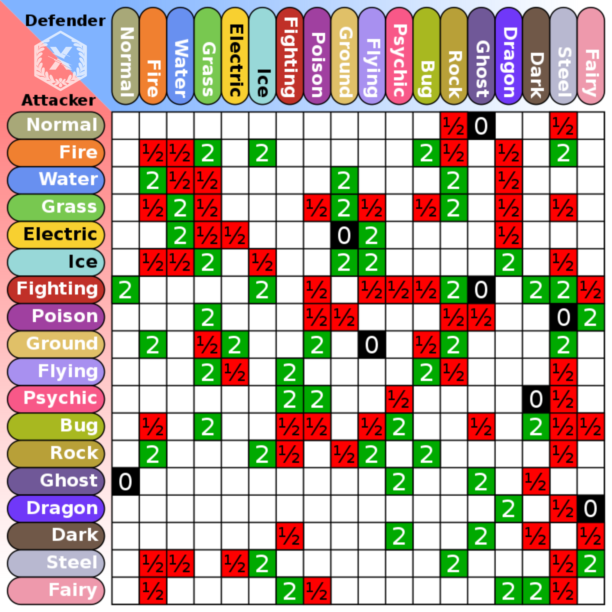
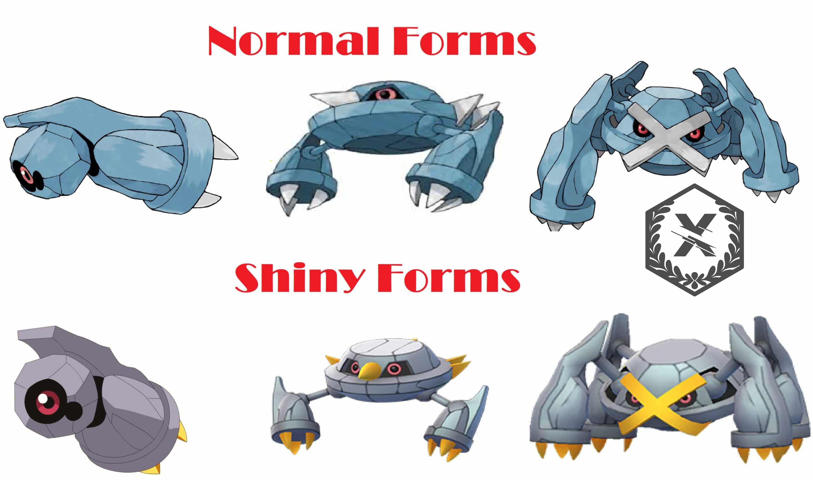

Up Coming Events
Here you will find up coming & current events for the Pokemon Scarlet and Violet games.
Terra Raid Battles
What are Terra raid Battles?

Tera Raids allow four trainers to face off against a powerful Pokemon. All Trainers in a raid battle are allowed to seamlessly make moves throughout the battle rather than taking turns, like how the raid battles in Pokemon Sword and Shield worked.
In these battles, Trainers will need to defeat the Terastallized Pokemon within a specific time limit. These Terastallized Pokemon are said to potentially have unique or rare Tera Type from the usual Tera Type available to the Pokemon.
Active & Upcoming Pokemon Scarlet & Violet Tera Raid Events
Here are all of the upcoming or active Tera Raid Battle events for Pokemon Scarlet & Violet:
| Pokemon | Tera Crystal Type | Tera Type | Event Date Start | Event Date End |
|---|---|---|---|---|
| Typhlosion | Black | Ghost | April 20, 2023, at 5PM PT | April 23, 2023, at 4:59PM PT |
| Blissey | Standard | Various | April 20, 2023, at 5PM PT | April 23, 2023, at 4:59PM PT |
All Past Terra Raid Events in Pokemon Scarlet & Violet
| Pokemon | Tera Crystal Type | Tera Type | Event Date Start | Event Date End |
|---|---|---|---|---|
| Typhlosion | Black | Ghost | April 13, 2023, at 5PM PT | April 16, 2023, at 4:59PM PT |
| Samurott | Black | Bug | April 6, 2023, at 5PM PT | April 9, 2023, at 4:59PM PT |
| Ditto | Standard | Various | April 6, 2023, at 5PM PT | April 9, 2023, at 4:59PM PT |
Currently Active Mystery Gift Codes
All Active Mystery Gift Codes
- ENJ0YBATTLE-Redeem for a TM82 (Thunder Wave) and TM87 (Taunt) (New)
- M0RESPEED-Redeem for 10x Carbos(New)
- LETSTERA-Redeem for a TM171 (Tera Blast)
- Get Via Internet-Redeem for Flying Tera Type Pikachu
- Get via Unique code if you pre-ordered the game in Nintendo e-Shop-Redeem for Adventure Set
- Get via unique code if you bought the Double Pack-Redeem for 100 Pokéballs
Pokemon Natures & Stats
All Pokemon have a nature associated with them. The nature that a Pokemon has corresponds with two stats.
One Stat is increased by 10% and another stat is decreased by 10%. The chart below will show you which stats are influenced by which natures:

Pokemon Natures & Berries
As you know all pokemon have natures. These natures also affect the types of berries that they like. The chart below shows the flavors of berries that correspond with a nature that a Pokemon can have:
In previous games knowing what flavor of berry a Pokemon liked would impact how well a Pokemon would preform durning competitions.
*Note - competitions are different from Pokemon battles*
In more recent games there are no competitions. However, the flavor of berry a pokemon likes is still important if you plan to use a berry as a held item durning battle.
For Example: If you have a Snorlax with a Careful nature than the flavor of berry it will prefer is Bitter. If you were to give it a berry to use as a held item and that berry has a dry flavor than the Snorlax would become confused durning battle because it dislikes that flavor.
Pokemon IVs & Ditto
Individual Values, IV for short. Are very important when breeding strong Pokemon for battle that are the best of their kind.
What Are IVs?
Individual values (Japanese: 個体値 individual values), are the Pokémon equivalent of genes. They are instrumental in determining the stats of a Pokémon, being responsible for the large variation in stats among untrained Pokémon of the same species. In the context of Generations I and II, which have a different IV system, IVs are also referred to as determinant values (DVs).
The Stats of a Pokemon are as follows:
HP or Health Points | Attack | Defense | Speed | Special Defense | Special Attack
Each of the six stats has an IV associated with it, with that IV coming into calculation alongside the Pokémon's base stats, Nature, and EVs to determine the actual stat number. A Pokémon's IVs are fixed when it is generated by the game (i.e. when it is encountered in the wild or given to the player by an NPC), and cannot be changed (although Hyper Training causes stats to become values corresponding the maximum IVs).
In the games, the term potential is often used to allude to IVs, such as by the stats judge. Shigeru Ohmori has stated that the reason EVs and IVs are hidden is because he prefers to think of Pokémon as "real, living creatures".
How do you breed for IVs?
First you will want to start with a Ditto

Next you will want to give Ditto the held item Destiny Knot.

Destiny Knot is used to control the individual values of Pokemon while breeding. If a Pokemon is placed into the nursery while holding a Destiny Knot, any eggs that are produced will have five of its IVs determined by its parents instead of three. This allows trainers to breed statistically perfect Pokemon much more easily than they could otherwise.
The five IVs that are determined by parents, and which parent the IV is drawn from, is random and cannot be influenced through items. Players can still progressively breed better Pokemon by hatching eggs, checking the IVs, and putting them in the nursery if they have better IVs then their parents.
Pokemon Evs
As Pokémon battle, in addition to gaining experience points they also obtain Effort Values (usually referred to as EVs), which are special hidden values in each stat (HP, Attack and so on). Each Pokémon you battle against gives off EVs in one or more stats.
Generally, this relates to the Pokémon's strongest stat - for example, if you battle a Geodude your Pokémon will get one EV in the Defense stat. If you fight a Gengar, you will get three Special Attack EVs. (See the pages to the left to see which Pokémon give off which EVs.)
Newly-hatched eggs and Pokémon caught in the wild - regardless of level - have no EVs and thus act as a blank sheet for EV training. Any Pokémon that has gained experience points from battling will have gained some EVs.
Every 4 EVs obtained in a particular stat equals one more point for that stat, by the time that Pokémon reaches level 100. At low levels you may not see all the points added straight away. If your Pokémon is at a high level you will see a lot of additional points going on to the appropriate stats at each level up.
In total a Pokémon can gain 510 EVs, but only 255 in one stat. Since 4 EVs equals one stat point, if you want to max out a particular stat it's only useful to get 252 EVs (63 points). The last 3 EVs would be wasted. However, in practice it's a chore to count exactly how many EVs you have obtained (there's no other way to tell) so you may wish to simply max out a particular stat and forego a point or two.
It is important to note that after breeding for IVs and before leveling up a pokemon, meaning your pokemon is still freshly hatched and at level one. If you give that pokemon 26 vitamins in the stats you want to max out than when you start to level up that Pokemon you will not have to worry about EVs going into the wrong stat based on what Pokemon you battle. That is because you would have already allocated the EV points to the stats you want raised. It also does not hurt to give your Pokemon Pokerus before leveling up, but the topic of the Pokemon virus Pokerus is another topic to be discussed in a different section.
Ev-Boosting Items
These items give your Pokémon 10 EVs in the corresponding stat. Vitamins are not affected by any of the other items below or Pokérus. There is a limit of 10 per stat, however they only work on the first 100 EVs. If you already gained 90 Attack EVs by battling, you can only use one Protein, not 10. The vitamins are as follows:

Power Items
Power Items are hold items that will increase the amount of EVs gained per battle. Each relates to a specific stat and will give you 4 additional EVs in that stat. You can get these for 16 BP at the Battle Park. Battling a Squirtle, for example, normally yields 1 Defense EV. Holding the Power Belt, this is increased to 5. If holding the Power Band, you receive 1 Defense EV and 4 Special Defense EVs.

Wings
Introduced in Black/White, the Wing items raise the corresponding EV by 1 point. However, they are not subject to the same limit as vitamins and can be used for the full 255 EVs if you had that many. The Wings are:

Ev-reducing berries
There are also a set of berries that will reduce your Pokémon's EVs. They are useful if you miscount EVs or simply want to change the EV distribution. If you have over 100 EVs in a stat, the first berry will reduce them to 100, while further berries will decrease the EVs by 10. Therefore if you want to remove all EVs you will need 11 berries for the stat.

Pokemon Types
Types refer to different elemental properties associated with both Pokémon and their moves. There are 18 total official types of Pokémon:

These 18 types apply to both Pokémon and their moves. Prior to Generation III, there used to be a Bird type which was only applied to Glitch Pokémon such as MissingNo. before they were removed, and prior to Generation V, there used to be a ??? type which was only applied to the move Curse, and the Shadow type, which was only present in Pokémon Colosseum, Pokémon XD: Gale of Darkness, and Pokémon GO.
Each type has its own strengths and weaknesses, most of which are logical setups. Fire-type Pokémon are weak against Water-type Pokémon, Ice-type Pokémon are weak against Fire-type Pokémon, Water-type Pokémon are weak against Electric-type Pokémon, etc. These matchups also apply to the types of moves as well: A Fire-type move such as Ember will be strong against a Grass-type Pokémon such as Bulbasaur. Some types of Pokémon are also immune to a certain type of moves, regardless of its attack power, such as using an offensive Ghost-type move on a Normal-type Pokémon.
Pokémon themselves can have up to two types, making them dual-type Pokémon, but moves can only be one type (with the exception of the move Flying Press which is a Fighting/Flying-type move). Most if not all dual-type Pokémon's types correspond with one another such as a Grass/Poison-type Pokémon such as Bulbasaur, or a Rock/Ground-type Pokémon such as Onix. However, not all dual-type Pokémon's types relate to each other like this. Some Pokémon may be dual-type between two types that don't normally go together such as Water/Electric types (such as Lanturn) or Grass/Water types (such as Ludicolo) or Grass/Flying types (such as Jumpluff), or Fighting/Psychic (such as Medicham and Mega Mewtwo X).
Some dual-type Pokémon lose one of their types and gain a different type upon Evolution such as Scyther (a Bug/Flying type) which evolves into Kleavor (a Bug/Rock type). Some singular type Pokémon will change completely to a different type or types upon evolution, such as Azurill (a Normal/Fairy type) which evolves into Marill (a Water/Fairy type). One Pokémon also completely lose a type upon evolution, Gloom (a Grass/Poison type) evolves into Bellossom (a Grass type). Some Pokémon can also change their type altogether, like Eevee (a Normal type) which can evolve into one of eight different types, or Cubone (a Ground type) which evolves into Marowak (a Fire/Ghost type).
How to Hatch Eggs Faster
So your got your Pokemon eggs. However, you don't want to spend up to 20 minutes hatching one egg. Well there is a way around this
If you put a pokemon in your party with the ability "Flame Body" along with your eggs that you want to hatch its secondary affect outside of battle is to keep your eggs warm and hatch twice as fast.
This allows you to speed up the egg hatching process.
Shiny Pokemon

Shiny Pokémon are special Pokémon that have a different look to normal Pokémon. The only difference is the coloring; shiny Pokémon are not more powerful. Some shinies are a completely different color to normal, while some only have small coloring changes. Shiny Pokémon are extremely rare - every time you encounter a Pokémon there is a 1 in 4096 chance it will be shiny (1/8192 in Generations 1-5).
Alternate forms are not shiny Pokemon
How to increase the odds of Shiny Pokemon
When it comes to searching out Shiny Pokemon, either utilizing the power of Picnics, or Food Carts available in towns like Medali will benefit the player greatly. As gamers continue searching and breeding their favorite Pokemon, there are a few different things that they’ll need to keep in mind.
Depending on the type of Shiny Hunting that gamers are employing, different foods will be beneficial to them. Gamers that are trying out the Masuda Method, which involves breeding Pokemon from two different regions, utilizing foods that increase Egg Power are going to be their best friends.
Egg Power, to be exact, is a variable that will help your Pokemon of choice lay more eggs while at a picnic. You’ll be able to create Sandwiches that will help with this power, or spend a few dollars and purchase specific food items from food carts that will help a player get more eggs in a single session.
A personal favorite sandwich for helping with Egg Power is crafting something along the lines of x1 Apple, x1 Jam, and a pick of the player’s choice, the Pokemon in your party will begin laying eggs fairly rapidly. Players will also be able to use special Herba Mystica that they can claim from 5-Star and 6-Star Tera Raids in their sandwiches to give this even more of a boost.
Leave the picnic up and running and step away from your console for a few moments, and come back to check once more. The basket can only hold 10 eggs at a time, so you’ll be able to farm this method while doing other things. Thankfully, the game does contain a total of 32 boxes, so players will be able to fill up a total of 800 spots if they have no other monsters in their boxes.
If a player is looking to utilize this method, just make sure that you are following these steps in particular. Place the two Pokemon of choice in the party, start up a Picnic, recall your Legendary Pokemon so it’s just the two breeding monsters, create a Sandwich that increases Egg Power, and sit back while reaping the rewards of your time and effort.
After you have enough Eggs, finding a central spot where you can continue moving and transferring eggs back and forth without encountering Pokemon is crucial. While the step count for hatching eggs has been drastically reduced from previous games, players that happen to have boxes full of eggs will still need to take plenty of time to hatch them all. A personal recommendation is the center area of Artazon, as it is just a complete circle without many obstacles to get in the way. Hop on your Legendary and dash through those eggs.
Players that don’t want to rely on the luck of the draw while using the Masuda Method have another option using Picnics. Finding an area that contains a Mass Outbreak will allow players to find a huge gathering of specific Pokemon on the map. While players may need to wait a while before finding the specific Pokemon of their choice, this is one of the easiest ways to get their hands on a Shiny.
Once players have found a specific area that contains a Pokemon of their liking, the real work begins. The first thing players will want to do is knock out 60 Pokemon using the Let’s Go! feature added to the game, as this will increase your odds of finding a Shiny Pokemon. Normally, the Shiny Rate in Pokemon Scarlet and Violet is normally 1/4096, but by knocking out 60 of the same Pokemon, those odds will drop to 1/1365.
After knocking out all of those Pokemon, save your game and set up a picnic. It’s another game of patience, but with all of the bugs and glitches that the game currently has, this is a well-known fact by now. Take down the picnic and pan the camera around the area that you are currently in. If there are no Shiny Pokemon, set up the Picnic once more, and continue doing this until you find a Shiny Pokemon in the area.
The reason that this works the way it does, is because the game resets the Pokemon in the area when a Picnic is set up. By taking it down, there will be a whole new smattering of monsters in the area, with a hopeful Shiny waiting to be added to the party. If players save their game before encountering the Shiny Pokemon, they’ll be able to come back to it by reloading the save. Players may want to turn off autosave before trying this method, so the game doesn’t save after defeating this one-of-a-kind monster.
The Shiny Charm

One of the easiest ways for players to improve their odds of collecting a Shiny Pokemon is by completing their Pokedex. After this monumental task has been completed, they’ll need to speak to Jacq. After showing him their Pokedex, Jacq will reward the player with the Shiny Charm. This increases the chances and odds of players finding wild Shiny Pokemon a fair amount, giving some extra Post Game content to look forward to.
One of the easiest ways to complete the Pokedex is by engaging in trades with friends. You don’t need to have every Pokemon in your game, so you may be able to trade the missing pieces back and forth with one another, as long as all of the pages of your Dex are filled, you’ll be able to claim this item. With certain Pokemon still being version exclusive, players will need to find a way to get their hands on these specific Pokemon, even if it is for just a few moments.
Players will also need to track down and capture the Legendary Pokemon, as well as the Paradox Pokemon available in each of these titles. While this task may initially feel impossible, the addition of Multiplayer gameplay will make the search easier than ever before.
Once players have claimed this unique item, the chances of finding a Shiny in the wild will drop from 1/4096 down to 1/2048. These odds combined with the previous methods will almost guarantee Shiny Pokemon will start appearing more often than ever. The halving of the normal Shiny Odds also applies to the Picnic Reset and Masuda Methods listed above, so players trying to hatch or catch the perfect Pokemon will have the odds on their sides more than ever before.